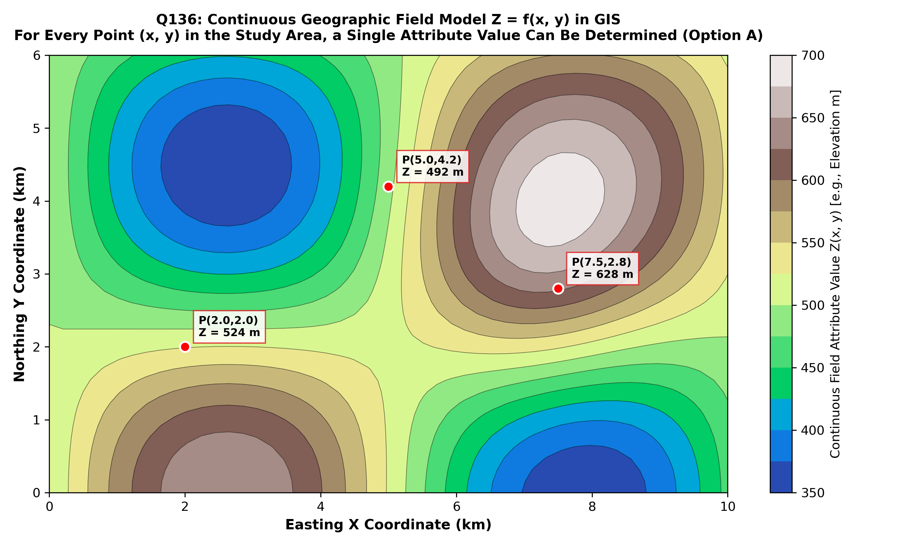

In geographic information science (GIScience), spatial ontology, and computer cartography, real-world geographical phenomena are conceptualized and computationally represented through two complementary ontological views (Burrough & McDonnell; Goodchild 1992; Chang):
| Spatial Conceptual Model | Mathematical Formulation | Fundamental Definition | Representative Phenomena & GIS Representation |
|---|---|---|---|
| GEOGRAPHIC FIELD (Continuous Field Model) (Option A) | $$z = f(x, y) \quad \text{or} \quad z = f(x, y, t)$$ | A spatial phenomenon that varies continuously across space such that for every single coordinate point $(x, y)$ in the study area, a real measurable attribute value can be determined. | • Elevation above sea level (DEM) • Atmospheric temperature & barometric pressure • Soil pH & geochemical trace element concentrations • Groundwater piezometric head Typically implemented as Raster Grids or TINs. |
| DISCRETE OBJECT (Entity / Feature Model) | $$\text{Entity } E = \{ID, \text{Geometry}, \text{Attributes}\}$$ | Space is treated as an empty background container populated by distinct, bounded individual entities with well-defined topological boundaries and empty spaces in between. | • Land cadastral tax parcels (Polygons) • Geological faults and river centerlines (Lines) • Borehole collars and mining shafts (Points) Implemented as Vector Points, Lines, Polygons. |

Mathematically, a geographic field represents a single-valued mapping from two-dimensional geographic space $\mathbb{R}^2$ to an attribute domain $\mathbb{R}$. There are no "empty gaps" or null locations within the study domain; whether measuring ground surface elevation, surface gravity, or ambient temperature, a value can always be determined at any chosen coordinate $(x, y)$ (Option A).
By authoritative GIS definition (Burrough & McDonnell, 1998; Goodchild, 1992; Chang, Ch. 1), a continuous geographic field is defined precisely by the property that a single, unambiguous attribute value $z$ can be measured, interpolated, or mathematically determined at every point $(x, y)$ across the entire spatial extent of the study area.
This contradicts the fundamental definition of a field. If values cannot be determined across points, the phenomenon does not constitute a geographic field.
Values are the defining essence of a continuous field (e.g. elevation in a Digital Elevation Model). Far from being irrelevant, the values at each coordinate define the physical surface.
While unmeasured sample locations exist prior to spatial interpolation, the underlying natural phenomenon itself has no missing values—a surface elevation or temperature exists at every point. A field model asserts total spatial completeness.
| Field Classification | Mathematical Property | Geological / Environmental Example | Preferred GIS Data Structure |
|---|---|---|---|
| Scalar Continuous Field | Single numerical value per point ($z \in \mathbb{R}$) | Topographic elevation, terrain slope, groundwater depth | Raster Grid, TIN (Triangulated Irregular Network) |
| Vector Field | Magnitude and direction at every point ($\vec{V} \in \mathbb{R}^2$ or $\mathbb{R}^3$) | Groundwater flow velocity vectors, tectonic plate motion vectors, wind velocity | Vector displacement grid, flow lines |
| Categorical (Discrete) Field | Qualitative class label at every point ($C \in \{C_1, C_2, ...\}$) | Lithological bedrock geology map, soil classification map | Classified integer raster grid, polygon coverage |
| Tensor Field | Multi-dimensional matrix at every point ($\mathbf{T}_{ij}$) | Crustal tectonic stress tensor ($\sigma_{xx}, \sigma_{yy}, \tau_{xy}$) | Finite element geomechanical mesh |